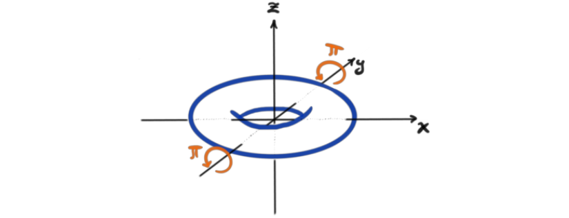
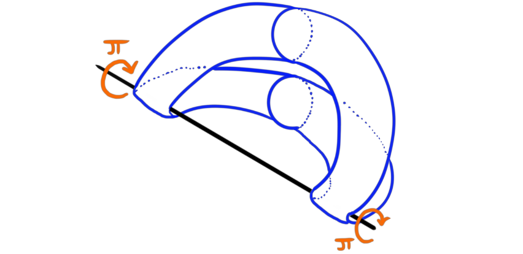
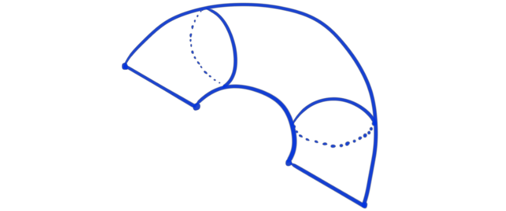
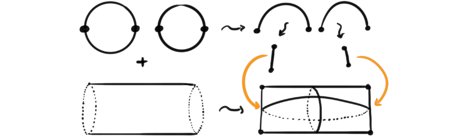

For quite some time I have occasionally stumbled onto the Wikipedia page for orbifolds while looking at topology related mathematics. I have always been fascinated by them, and always though that they certainly will come up during studies at university, but they never have (at least not yet). On said wikipedia page it says that the word orbifold is short for “orbit manifold” and that these orbifolds are in fact a generalization of manifolds.
In this post we will focus on smooth orbifolds as these are nicer to draw, and are a nicer introduction to the objects. These will then be generalizations or smooth manifolds. So, one of first things to ask is maybe why smooth manifolds need generalizing at all? Smooth manifolds in them selves are very nice objects and are used all over mathematics, physics, robotics and more, but they can be a bit restrictive. Many natural objects have so-called singularities, or singular point. Take for example a pillow case. It has four such singular points, namely the four corners.
These types of points are not allowed on a smooth manifold, because there has to be a neighborhood around every point that looks like euclidean space. Smooth orbifolds however, allow these types of points and several other types of “irregularities” that are not allowed on smooth manifolds. They are actually much more general than this, and their full generality is to me still not understood. Orbifolds have been abstracted and made “nicer” by using heavier mathematical machinery (étale Lie groupoids or Deligne-Mumford stacks), but the classical definition is still worth discussing and learning, which is what we will attempt today.
So, the two questions I want to answer today is; What is a smooth orbifold? And how do they generalize smooth manifolds? Maybe sometime in the future we will study them closer and ask more nuanced questions.
Preliminaries
Recall that a manifold is a nice topological space that locally looks like Euclidean space. More precisely, around every point, there exists and open subset around it and a homeomorphism, called a chart, from that open subset to an open subset of Euclidean space. If all these homeomorphisms are in fact smooth maps, i.e. diffeomorphisms, then the manifold is called a smooth manifold. To motivate the future definition of a smooth orbifold a bit, we look at what can happen to Euclidean space when taking quotients by a group action. Don’t worry if you don’t know these terms yet, they will be explained later, but try to understand what is happening by looking at the pictures.
Let $\mathcal{M}=\mathbb{R}^2$ and let $G=\mathbb{Z}\times \mathbb{Z}$ act on $\mathcal{M}$ by $(n, m) \cdot (a, b) = (a+n, b+m)$, i.e. as a lattice. If we take their quotient, $\mathcal{M}/G$ we get something that still has a smooth structure. In fact we get the torus. This is quite easy to think through, but it is maybe even easier by a visual “guide”.
The torus is a smooth manifold, so we have produces a nice object that is locally diffeomorphic to the object we started with. If we instead let $G = \mathbb{Z}_4$ and let it act on $\mathcal{M}$ by rotation around origin, we suddenly get something that does not have a smooth structure. We get a cone.
These are both examples of orbifolds, and they also hint at the fact that orbifolds generalize manifolds. To have a nice intuitive definition, akin that of the intuitive definition of a manifold, we can say that an orbifold is a nice topological space that locally looks like Euclidean space modulo some linear action from a finite group (or more general, a group acting properly discontinuously).
We have already used terms like “a group acting on a space” and “quotient by a group action”. To make sure we understand these before delving into the technicalities, we do some repetitions on a couple definitions.
Definition (group action): Let $X$ be a set and $G$ a group. A group action from $G$ on $X$ is a map $\alpha : G\times X\rightarrow X$ such that $\alpha (e,x)=x$ and $\alpha (g,\alpha (h,x)) = \alpha (gh,x)$ for all $g,h\in G$ and $x\in X$. The action is also often just denoted $gx$. If $X$ is a topological space, a group action is called properly discontinuous if for every $x\in X$ there exists an open neighborhood around $x$ such that $\alpha (g, U) \cap U \neq \emptyset$ for only a finite number of $g\in G$. This holds trivially true for all finite groups.
Definition (quotient space): Let $X$ be a set and $G$ a group acting on $X$. We call the set $G_x = { gx\in X , | , g\in G}$ the orbit of $x$. We can form an equivalence relation on $X$ by saying two elements are equivalent if they are in the same orbit. The quotient of $X$ by that relation is called the orbit space, or the quotient space $X/G$. When $X$ is a topological space, the orbit space has a natural topology given by the quotient topology, and hence it is also a topological space.
So, the orbit space of a topological space is always a topological space. But, is the orbit space of a smooth manifold always a smooth manifold? No, we saw that in the examples with the cone, but the orbit space of a smooth manifold is always an orbifold!
What is an orbifold?
We have already made an intuitive definition, along the lines of the intuitive definition of a manifold. But, as all who have done manifold theory properly, there are some small details needed to make the intuitive definition precise, like charts and atlases. The same holds for orbifolds.
Definition (Smooth orbifold): A smooth orbifold $\mathcal{O}$ is a Hausdorff topological space $X_{\mathcal{O}}$ together with a covering ${U_k}$ such that for any element $U_i$ in the cover, there is a diffeomorphism $\phi_i: U_i \rightarrow V_i/\Gamma_i$, where $V_i$ is a subset of $\mathbb{R}^n$ and $\Gamma_i$ is a finite group acting on $V_i$. Also, for any $U_j \subset U_i$ there is an embedding $\phi_{ji}: V_j \rightarrow V_i$ and an injective group homomorphism $f_{ji}:U_j\rightarrow U_i$, such that for any $\gamma \in \Gamma_i$ we have $\phi_{ji}(\gamma x) = f_{ji}(\gamma)\phi_{ji}(x)$, and such that the following diagram commutes
Ok, that definition is a mouthful and a half, but it is just as precise as it needs to be to give us how we intuitively think about the informal definition we gave earlier. The covering makes sure that all points on the underlying topological space is part of one of these sets that look like a quotient, and the whole subset business makes sure that “zooming” in, or looking a bit closer around a point, does not reveal something wildly different.
A nice class of examples comes from something similar to the two motivational examples we saw earlier, namely global quotients. The space we are taking the quotient of does not have to be the Euclidean plane, or even a Euclidean space, but can be any smooth manifold. Let’s formalize this class of examples by a lemma.
Lemma: Let $\mathcal{M}$ be a smooth manifold and $G$ a group acting properly discontinuously on $\mathcal{M}$. Then their quotient $\mathcal{M}/G$ is a smooth orbifold.
It is important to note that not all orbifolds arise as such quotients of smooth manifolds. But these are nice for intuition, and make some nice examples, such as the example from the beginning, namely the pillow case. Take the smooth manifold $\mathcal{M}$ to be the torus. Let this torus be constructed from rotating a circle of radius 1 around the origin in $\mathbb{R}^3$, with the axis of rotation being the $z$-axis.
If we act on the torus by rotating $\pi$ radians around the $y$-axis, we get a symmetry transformation, or equivalently a $\mathbb{Z}_2$-action.

If we then take the quotient by this action, i.e. $\mathcal{M}/ \mathbb{Z}_2$, we get our wanted pillowcase. How can we see this? If we poke a stick into the torus, in the direction of the $y$-axis, we see that it penetrates the torus at four points. When we take the quotient, it is roughly the same as folding the torus in two, with the fold being around the stick.

The important bit here is that it is not just a fold, but a kind of merger after folding. The result looks something like this.

Which we can see, after a bit of delicious topological deformation, is the pillowcase we were after.
Another way of viewing it is to look first at only the points not in the $yz$-plane. After taking the quotient, we see that all the points not in the $yz$-plane form a cylinder. At the edges of this cylinder are the points that were on the $yz$-plane. These points formed two circles on the torus. The orbits of the points on these circles are just two points symmetrically above the $y$-axis, except at the four points that lie exactly on the $y$-axis. These four points are their own orbits, which means that the orbit space of the two circles is diffeomorphic to two disjoint lines. These two lines are then gluing shut the cylinder of all the other points. The following drawing is not at all mathematically precise, but it kind of illustrates the process I’m describing.

There are more than one way of constructing the pillowcase as a smooth orbifold, but I though this one made everything quite clear. It is also a relatively easy, but not too easy example of a smooth orbifold. There is many more examples that are worth looking into, and maybe I will some time, but for now I think this post is long enough.
Motivation for further reading
The theory around orbifolds seem to be very rich and interesting. The definitions I mentioned earlier, i.e. étale Lie groupoids and Deligne-Mumford stacks are objects that require some more deep insight then I have currently, but maybe they are cool to look at in the future some time. There is also a whole theory of algebraic topology, homotopy theory and differential geometry developed for orbifolds (both from the classical definition we have discussed here and from the fancy new definitions). To have such a theories one needs special definitions for orbifold coverings, orbifold fundamental groups and more generally orbifold homotopy groups, tangent orbibundles or more general orbibundles, orbifold Euler characteristics and many more. It may be fun to try to go through some of these in the future as well.